来源：https://xtx0o8yn7x.feishu.cn/docx/YHjqd2XPWoVvfPx73FrcQJ9onWd
哈喽，圈友们好，我是W先生。
一名90后流量创业者，7年互联网一线实战经验，一直专注于玩流量，做流量轻资产生意，野路子流量派出身。
做过不少流量项目，也混迹过互联网大厂（网易）做运营增长，完成过百万级用户增长及品牌私域增长全案，懂运营、懂流量、更懂人性，擅长各平台引流策略及可落地实操方案，通过技术与数据驱动增长。
前|网易流量增长专家，现|流量公司合伙人
我主要负责公司流量体系搭建及团队搭建管理，并总结形成有效的方法论和sop给到团队小伙伴。
2022年也是第一次接触游戏领域，2022年4月-2023年4月专注于国战（氪金）游戏领域用户获客，带团队5个人，用300+抖音矩阵，通过短视频矩阵+SEO，每天输出1000+视频内容，做到行业领域霸屏霸榜，单日注册用户增长200+，单注册用户人均产值1800元+。（游戏名称：《北凉捍刀行》-现在已经没做、《傲世飞仙》-独家）
2023年5月至今，在原有业务基本盘之上，为寻求业务新增长点，开始涉及传奇领域直播获客，单日用户获客500+，最高做到过单日注册2000+，目前单月流水近300W+（佣金70%），迄今为止，直播游戏产品有《裁决王座》、《屠龙圣域》、近期切产品，主要做《铁血阵地》。
我们直播获客阵地，主要分为抖音和快手，也由于我对抖音的玩法更加了解，所以在这里快手直播就简单的一笔带过，就为大家分享有关于我们做的抖音直播。
如何利用抖音直播为业务实现持续、高质量的用户增长，如何低成本的复制，完成前后端的流量闭环。以及抖音直播鱼塘起号详细流程，几乎适用任何抖音直播赛道
在这里我就针对抖音直播简单聊一下，快手直播就一笔带过了，通过业务实战中，总结一下两个平台之间的利弊：
优势：
1、8亿日活，平台用户基数庞大，有着更大的市场空间；
2、流量精准度相对比更高，懂抖音数据算法的更占据优势，可获得更多自然流；
弊端：
1、相关产品资源对接，需要资源拿直播间资质，属于资源型生意；（单个直播间授权8万左右）
2、每天规定投流指标，每日单账号投流不低于10000元，否则直播间直接封禁；
3、平台规则限制较多，容易不小心直接封号或违规；
4、行业同行竞争激烈，去中心化的推流导致内卷加剧；
总结：
抖音授权直播间入门槛较高，不利于个人及小工作室。个人及工作室玩流量比较不错的可以尝试野播（未获取授权账号，通过话术引导导流私域-微信/企业微信，给用户发游戏链接）
优势：
1、投流金额没有任何限制，根据投产决定是否加投即可；
2、限制较小，不至于轻易直播间被抬；
弊端：
1、流量日活相比抖音较小，且难以撬动更多自然流；
2、流量精准度相比抖音明显下降，投流流量注水较为严重；
传奇直播项目，主要通过获取相关游戏授权，申请抖音白名单直播间，通过直播获客，主要以cps的形式，用户产生消费充值，从而获取一定的佣金（具体佣金比例，视情况而定，一般传奇游戏佣金比例都在70%左右）
服务的用户
我们这块的业务以30-40岁三四线及三四线以下的男性用户为主，有房有车有存款，有一定消费能力，传奇这个赛道的用户，付费习惯都已经被市场教育得很好了，基本上游戏产品不要太烂的都能做到30%及以上的付费率完成首充。
传奇直播这个赛道，在一定程度上，可以说属于付费赛道，需要通过一些相关资源，才能拿到相应产品的直播间名额，才能够进行直播，未获取相关授权的，被系统监测或被举报基本上直播间都是秒封。
因此这个赛道在游戏相关领域中可以说属于门槛较高的，因此也降低了不少的竞争。这个赛道主要分为白名单/野播两种直播方式，我们只有起号阶段，测试账号流量用野播的方式，测试后账号都是用白名单的直播间开播，鱼塘号+微付费的平播打法。
白名单：获得相关产品及运营平台官方授权，获取抖音直播间白名单，进行开播；
野播：未获取相关授权，不得在直播过程中漏出相关游戏画面、图片及相关领域词，通过直播流量，引流用户私域发游戏链接，封号较为严重，但门槛较低，适合玩流量比较厉害的个人及工作室操作。（我前期起号做账号筛选时，会通过野播的形式起号，流量不错的再用来加白名单）
如果有圈友想做的，建议可以先从野播开始，毕竟白名单的门槛还是比较高的，风险系数较大，可以先进行熟悉练手，再核算自己的成本利润，看是否需要进一步放大。
传奇主要难点在于授权，市面上好的产品依旧争先恐后，大家都想做，在这里简单说一下，如何对接传奇游戏获得授权之类的。
1、通过现有平台直播，可点开直播间小手柄，查看游戏发行、运营公司，可通过企查查等方式可直接获取联系方式；
2、找到相应的直播博主，直接后台私信联系博主，询问是否可进行相应合作；
3、行业领域社群之类，有部分可接商单之类；
我们公司相对来说还是比较卷的，人员架构也都是比较简单精简，都是以最小单元体的方式进行放大，主要现如今的人员岗位主要分为三个板块：
流量前端：主播、运营助理、剪辑
私域后端：GS、聊手
职能部门：人事、财务、行政
流量前端——直接负责人（我）：
我主要负责【流量增长】、【团队搭建】，为团队的流量增长及方向调整做掌舵，时刻身处业务一线，做业务流程规划梳理，每日日常复盘，并形成有效可落地的方法论和sop给到团队，【运营】、【投流】这两大板块更是我自己重点盯的方向。
一、主播：
1、日常完成直播任务。每人每天4场，每场1小时。
2、服从直播过程及下播后日常复盘及调整；
3、服从公司临时调整及安排。
二、直播助理——工作安排：
1、直播助理号：
（1）直播间维护：引导下载公告，回复鱼塘号及真实用户问题。
（2）直播间控评：将负面评论用账号刷上去，将黑粉拉黑。
（3）抖音群管理：负责粉丝群维护管理，日常问题答疑（如：链接发放、游戏问题解答、）群权限管理（1、开播期间群可自由发言，下播后将群禁言，防止有人发广告。2、打广告、扰乱群规则移出群聊）
（4）私域导流：引导用户添加企业微信。
2、鱼塘号管理：
（1）敏感广告发送：如，引导用户关注+灯牌，引导用户加主页群聊。（管理员账号直播间发送营销类广告违规容易导致直播账号受处罚，因此采用非管理员账号进行发送，更有效防止直播违规）
（2）带动人气节奏：将账号包装成普通用户身份，在直播间配合主播节奏做提问答（问题、回复都有标准sop），带用户节奏，营造直播间良好氛围。
（3）直播间做数据：根据直播间后台实时数据模型，缺数据时补数据（关注、灯牌、评论、点赞），以此拉动流速，保持流量平稳性。
三、剪辑：
1、视频剪辑；每日主播直播内容切片视频制作，每日不低于3个视频。
2、账号更新；主播账号每日日常内容更新（视频标题、标签有专门SEO词文档，有给到完整sop）
3、设计制作；直播间贴片及相关设计工作安排。
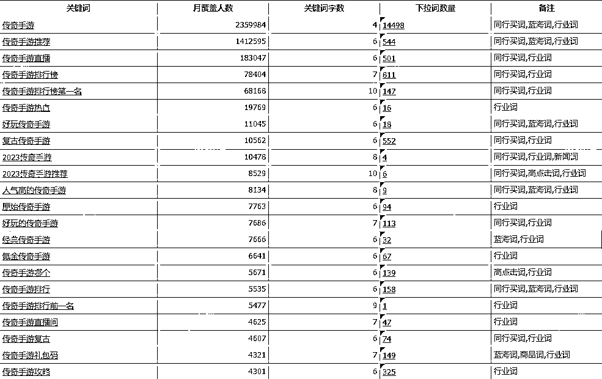
相信很多兄弟们都是对抖音比较了解，所以就先从抖音直播这一板块的业务开始讲起，其中的一些直播起号打法，也都比较适用于大多数人平移至其它领域都能够完美适配，希望能够给大家带来一些灵感或启发，能够让大家在自己的业务中能够用得上。
大家都知道，直播很多时候，大多公司都过于依托于主播，前期培养成本过高，培养出来后又面临各种利益冲突，主播作为直播过程中的核心要素，人本就具有各种不稳定性，极大程度上的决定了业务的稳定性及未来发展，因此，在这里我将主播流程全部固定，在一定程度上采用了保下限，拉上限的方式。
我们的核心就是重运营轻主播，业务核心在于运营和团队、资金资源，核心都在自己手上，主播相当于只是一个柜台销售，主播的重要性极大限度上的被削弱，从而增加了主播的稳定性，不需要过于担心主播的不稳定导致公司业务增长受阻的问题。
目前的话我们在沈阳这边有五个主播，我们主要以重运营轻主播的模式来做，运营、投流如何拉流量这些都是控在我自己手上，主播都按照标准化进行复刻，保下限，争上限，从矮个里面拔高个。
我们对主播的基础招聘只有三点，基本上符合前两项就可以：
所有面试后的主播，直接人事进行对接约好时间入职，试用期3天，完全就能看出主播是否合适，能达到最低要求的直接留下，剩下还有一个月实习期，通过数据及日常工作反馈，看是否合适，合适的直接签署合同，不合适的就直接换：
第一天：熟悉游戏、直播文稿；
第二天：试播
第三天：试播
将文稿及直播所圈定的几个画面，直接进行试播，这是我们给到主播和直播助理的稿子，包含常规问题、标准答案，岗位之间工作形成sop文档化：
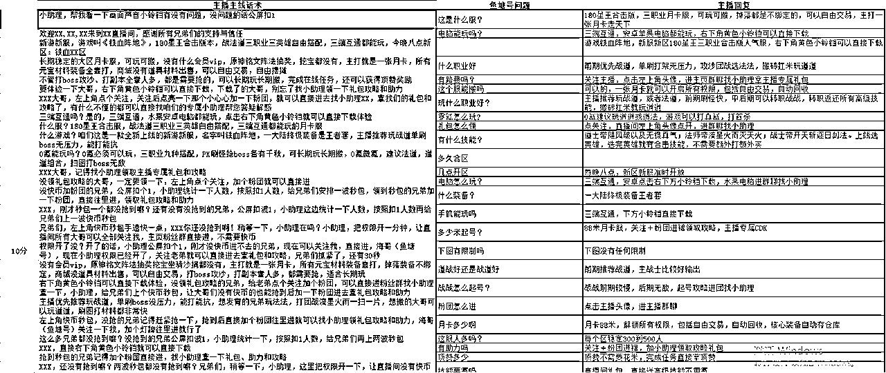
我们的培训都会从主播里面，挑选有自主学习能力，网感还行的主播再想办法做提升，培养主播的流量感知能力，我们的核心不完全依托于主播，更不会因主播的能力参差不齐，导致业务频繁受阻或被主播所束缚的情况出现，这个可能跟很多的公司对主播要求不太一样。
我会提前自己熟悉游戏，对产品痛点和爽点进行剖析，通过结合抖音直播的数据模型控流，整理出一套音画同步的sop流程，并设置好主播、助理之间互动回复协作流程规范，给到主播和直播助理进行熟悉演练，配合我这边对流量的节奏把控，对其进行相应的调整迭代，形成一套可落地的sop全流程。
下面我将我平时直播过程中所做的一些动作和一些流程话术、sop给到大家，希望能够帮到大家~
鱼塘号相关操作：
关于直播鱼塘号如何养号，在这里也跟大家讲一下，鱼塘号螺旋起号，快速打标，的操作流程，这个模式适配性较强，几乎适用于任何赛道，个人、工作室、公司都可直接复用！
鱼塘号相信很多兄弟们都知道，就相当于是曾经的淘宝刷单，为自己的账号做数据，以此获得更多的曝光。
这个是我写给团队内部的关于如何养鱼塘号的细则，大家有需要的可以看一下~
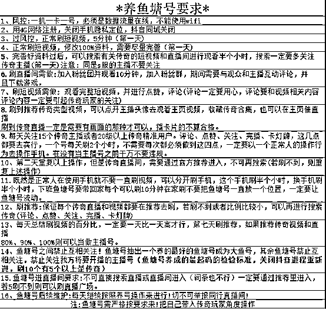
鱼塘主号、鱼塘号、主播号如何建立联系？
很多人都会说主播号开播时，鱼塘号刷不到自己的直播号，那么，我们应该怎么做，在这里我们都是通过间接联系，从而产生的建联，方便开播时能够让自己的鱼塘号能够刷到自己的直播间。
开播前鱼塘号养号，我们通过信息流推荐，需要刷相关领域视频/直播进行养号养标签，我们通过推荐需要找到一个自己直播号所属赛道（如：传奇游戏）头部直播间，然后将其它账号逐步刷到同一直播间伪装成正常用户，在直播间内模拟真实用户行为，做停留、互动（不限于关注、加灯牌、刷礼物等行为）
将该头部直播间作为我们鱼塘号假装偶遇的一个场域，通过伪装成假装偶遇，从而在直播间内，点击用户信息，鱼塘号关注鱼塘主号，不断重复以上操作，让所有鱼塘号逐步关注自己的鱼塘主号，鱼塘号与鱼塘主号建立联系。（该头部直播间需找用户信息可见，不然无法通过直播间内进行关注鱼塘主号，另外一定不要批量同时操作，防止被系统所检测出来）
鱼塘主号本就权重相对较高，我们再通过鱼塘主号不断刷视频/直播，刷到我们的直播间，其它鱼塘号就会因为关注了我们的鱼塘主号从而与我们的直播号会产生间接联系，很轻松刷到我们的直播间。
鱼号成功与否评判标准：
小鱼所刷内容起码10条里面5条是相关领域内容（含视频、直播），大鱼（鱼塘主号）起码10条里6条是；
细节点补充：
1、所有鱼塘号互动都要是领域相关关键词互动，通过鱼塘号在直播间互动的关键词，从而给直播间打标，便于系统识别；
2、所有的鱼塘号不要互相关注，也不要提前关注主播账号；
3、鱼塘主号最好在抖音平台产生付费行为，账号尽量做到抖音等级10级以上，或在抖音平台上产生过购物消费行为，模拟真人账号消费行为；
4、所有鱼塘号不要长时间放在公司，可交于公司员工分批打乱下班后带回家，路上或到家刷视频直播至少5-10分钟；
5、主播号开播时主动关闭搜索，防止同行搜索；
6、养鱼过程中，刷到传奇直播间，不要上来就关注加灯牌情况，或者没有完播。直播间一定要至少停留互动5-10分钟以上，再陆续的点赞+关注+灯牌，别养成死鱼；
鱼塘螺旋起号：
我们是通过前三场直接打爆直播间的feed流推荐，然后再挑选流量比较不错的账号，进行直播间过白，获取授权，挂直播间小手柄，在这简单讲一下，我们的一些操作和实操经验：
一、鱼塘号起号核心五要素：
1、真实成交；首播至关重要，首播不管直播时间多久，不限时间，一定要真实成交（下载注册），无论是通过马扁还是鱼塘的人群效应带动，必须至少保证10个真实成交数据再下播。（首播一战定乾坤，后两场事半功倍）
2、数据递增；第一场首播有了真实成交之后，第二场的数据，我们要将数据做到翻倍，我们主要是做，关注、灯牌、成交，这三个关键数据指标。
3、分钟流速热度叠加；做好分钟流速的热度叠加，分钟级评论起来一样会增加feed推荐，做好控场节奏把握，将真实用户粘性做起来。比如：点赞、憋评论等。
4、鱼塘操作；鱼塘号开播20分钟后进（划重点），不要一开播就上鱼，至少5-10分钟后有一定停留、互动后再做关注、加灯牌等数据，如：先用20条30分钟的鱼，如果拉不动成交数据，就换一批鱼，我们最高做到过一场用近100条鱼。
5、流量占比；feed推荐占比尽量保持不低于90%，用白号+鱼的控制去打。
决定流量池的关键，更多人的粘性才是关键，比如你直播间场观1000，有600人跟你有粘性，给你做了一个动作，你的内容认可度就高，feed推荐就急剧上升，互动率越高，用户粘性指数就越高，要知道用户在直播间任何动作都算互动，不断的重复做这个动作的叠加，流量池就会越来越大。
先做曝光，再做转化，feed流的提高是关键因素，刚开始的时候甚至于我们不做任何转化，先憋单15分钟，甚至于20分钟，到了想要的数据时再转节奏，告诉他们，多呆一会，点赞过10万，给大家发20万（不一定非得发20万，这里只是举个例子，可以适当的骗，骗用户留下来、骗用户关注和灯牌），或者是：老板们，我忙一下，喜欢玩游戏的留一下，等下大礼包，不喜欢玩游戏的左转。
再做数据模型的把控，这个时候看数据模型，以及分钟曝光指数，在feed推荐不掉的情况下，立刻打超大秒包的连续进场，再做急剧成交的转化，节奏偏向强营销，不用担心流量会泛（保证直播间内足够数量鱼的互动，不用担心红包福袋的急速流会打乱我们的标签）鱼塘号带好节奏，这正是我想要的，拉高在线。营销转化后去控制数据模型的建立，主要是对数据的把控，节奏的把握和控场。
一定要通过自己直播间的内容，哪怕是骗，也要做出用户真实数据（关注、灯牌、成交转化、点赞）。
我说过，第一场直播拉数据至关重要。
问：第一场直播没做好怎么办？
答：直接把下一场当做第一场去播就可以了，也可以直接选择换新号，通过我说的这种方式去开播拉feed流。
注：
1、不要过于依赖于鱼塘号，鱼相当于公交车，鱼的作用在于带节奏和做人气，任何鱼都做不到为你的直播间精准打上标签，因为权重不够。
2、好的账号是筛选出来的。很多人实操也知道，做账号其实也有玄学，账号分配的流量大小也都是不一样的，我们都是通过结果来判定并筛选账号的，用账号测流量，流量不错的再用来直播，没必要将时间浪费在无用的账号上，账号是子弹，时间是金钱。
3、结果推导行为，行为判定标签，不要被表面的用户兴趣标签所误导，从而影响我们对数据的判断，我们直播间所谓的“标签”是通过我们想要的结果，以结果为导向，倒推直播间用户标签是否精准，来判定系统是否给我们打上标签，并非系统来给我们判定是否打上标签。要知道所谓的“标签”是动态的，并非一成不变，举个例子，今天我们的账号经常刷美女，我们今天的兴趣标签就是所谓的lsp，如果我们今天在直播间或短视频下单美妆，那么，我们的行为标签就是属于美妆。
4、数据权重，直播间新进用户的数据权重远高于老用户，数据指标极度重要：成交转化>灯牌>关注>互动>停留，我一般都是用马扁，要用户的关注和灯牌
数据层面上，是有着绝对的标准，是理性的，是有依据的，无论怎样的玩法，都是通过数据喂养从而迎合平台算法，只不过是方式方法的不同罢了，底层逻辑都是一样的。
大家做直播的会发现，流量一旦过度精准，会导致流量层级萎缩，导致的推流流速下降，我们一般都是保持控制我们所在的领域（游戏）占比在10%左右，领域用户兴趣标签过高反而不好，甚至于用户兴趣行为标签前三都没有。
近期用这个办法起号，起了七八个号，都是百分之百起号，大家可以参考用到自己的领域。
我们的直播数据
下面给大家看一下我们几个直播间的一些数据，可以看到，我们的数据普遍不是特别高，但通过鱼塘+微付费的直播打法，转化数据还是比较不错的。
我们单场基本上，可以看出，场观普遍都在100在线左右，高的时候也就在线150左右，不会有太高的在线，而且整体的流量曲线都是比较平稳，主要两点原因：
1、主播能力评估；由于我们的主播综合能力不强，并通过对主播流量承接转化能力的测试，主播在对于流量较为平稳的情况下，承接转化是性价比较高的，对于急速流或直播间人数较多的情况下，承接转化能力略显无力。
2、数据模型控流；流量要猛，更要稳定持久，对实时数据的把控，节奏的把握和控场，通过匀速投流做一定补量和鱼塘的做数据，将流量尽量控在一个较为平稳的流速。
每天单账号播6-9场，单场50分钟左右，近期流量有所下滑，平均单场直播转粉率在3%左右，加粉团比例在1.5%左右，注册率在1.9%左右，场观与注册比几乎能做到几乎60:1，这个数据相对而言还是相当可观的。
对比同行及利润比的核算，行业获客成本单用户在100-140左右，行业单用户产值目前在200左右，我们通过前端和后端的配合，目前单用户产值在230左右。
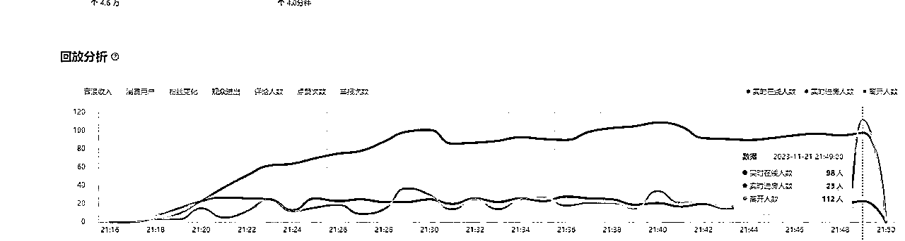
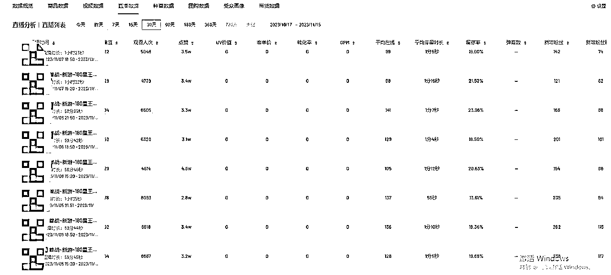
下面再贴几个，目前我们的近期新起的几个号：
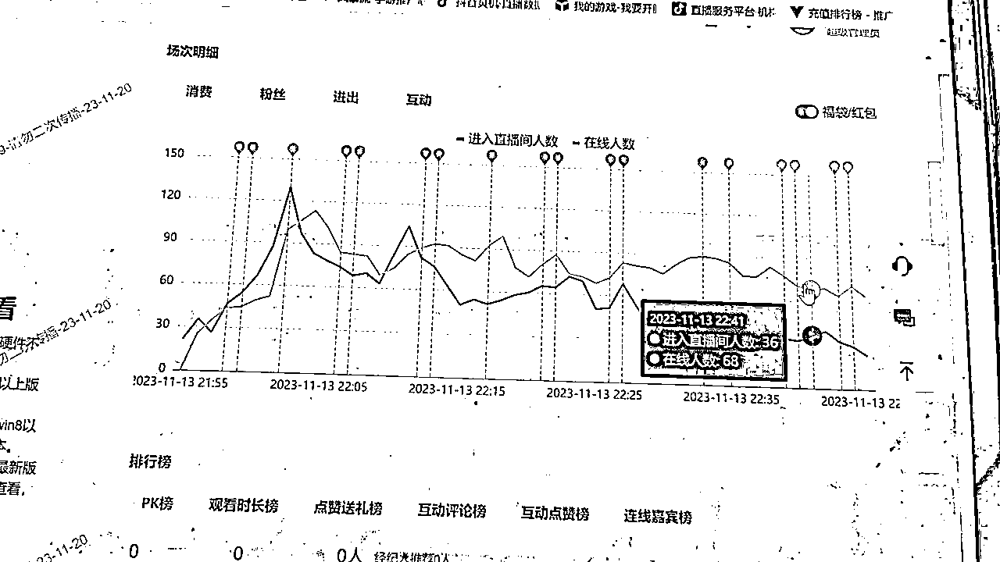
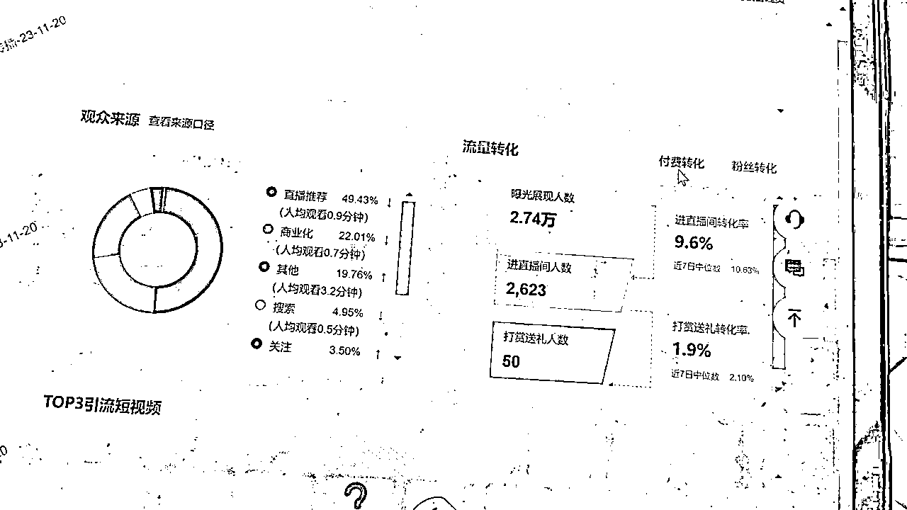
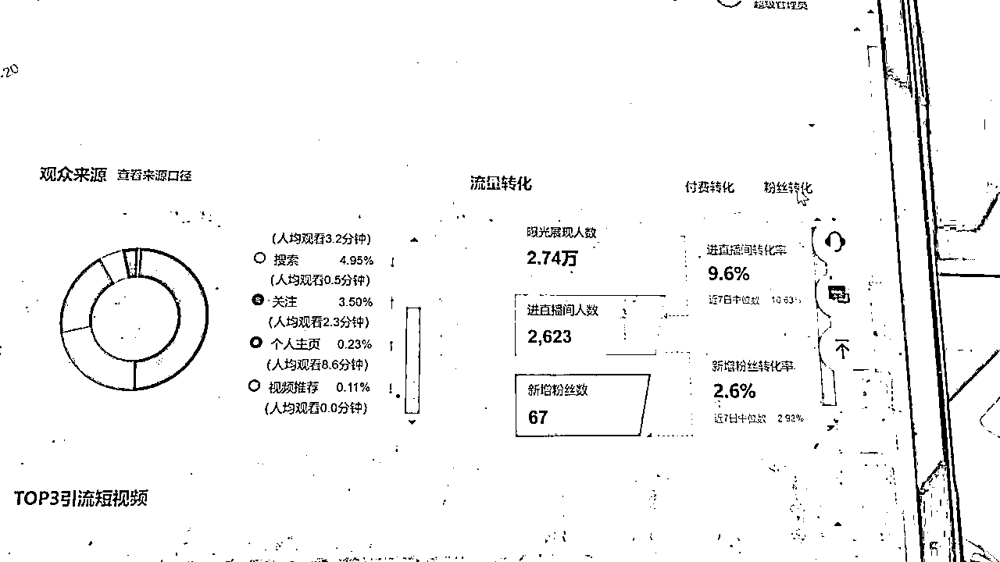
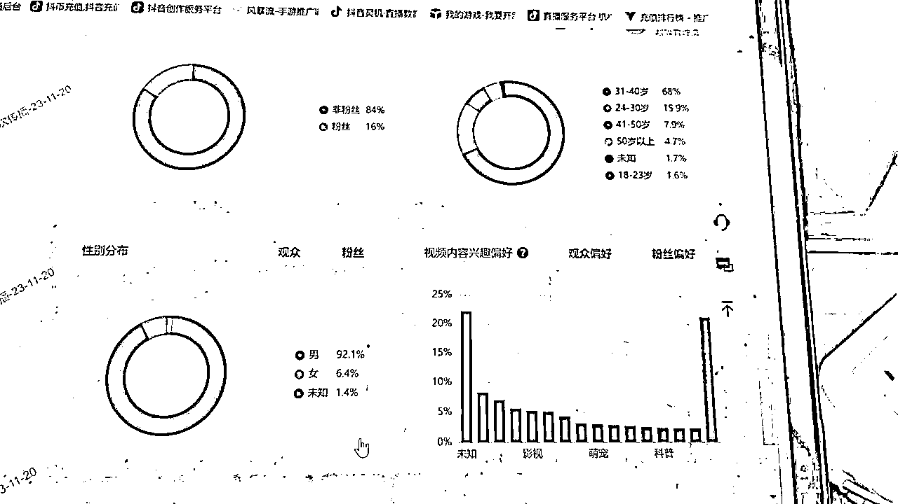
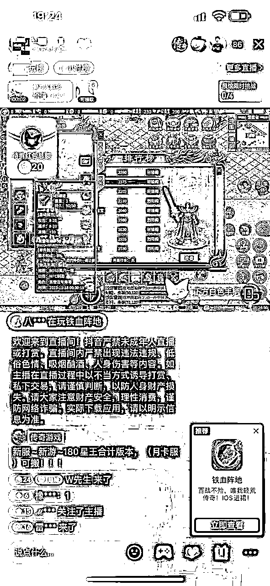
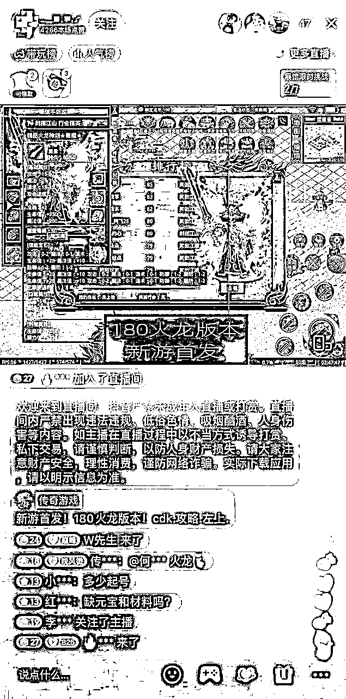
1、GS（行会会长）：负责用户游戏环境内留存，增强用户游戏体验。
（1）游戏区服管理及创建行会，平衡行会人数及战力；
（2）带用户游戏下图、打怪、打对抗；
（3）引导拉用户上YY、加行会微信群聊，做好用户跟进；
（4）引导用户添加聊手企业微信；
2、聊手：根据每日各区服充值情况，实时记录用户充值，并通过企业微信进行跟进；
（1）根据每日后台充值情况，对用户做跟进；
（2）推荐用户充值套餐，帮助用户省钱还能更好提升游戏体验感的办法（如：装备升级、提升战力）及时询问并帮助用户解决问题；
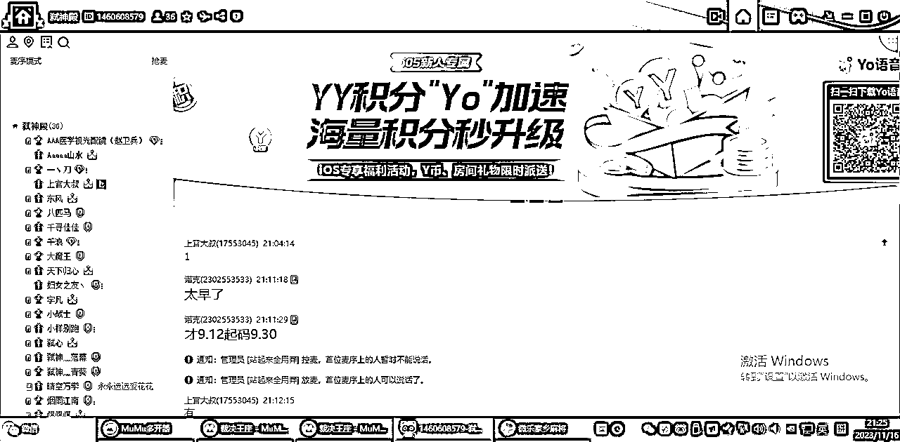
我将公司团队与渠道全部做了明确分工和渠道分流，在这里也简单说一下吧！
相信会有人问我们为什么把直播间/投流账号，甚至于后台都全部分开呢？主要有几点：
1、单账号多播。由于单账号每日规定投流至少10000/天，采取单账号一天播6-9场（现在是每天12场），采用鱼塘+微付费的模式，拉长投流时间，有效拉升流量精准度，从而带来更多转化；
2、做小不做大。将主播培养成流水性式的销售，可复制性强，且稳定性高，可替代性强，不会轻易被主播所左右，相比1个大主播，更愿意有10个小主播；
3、多直播矩阵。防止账号限流、违规、封禁，直接换号，不至于流量较低或无直播间导致的主播之间的内耗，灵活性更高；
4、减少公司内耗。将主播相互之间做有效隔断，防止经常坐在一起，一些负面言论及影响迅速扩大，形成以主播为小组，小组配运营助理、投流、直播助理，独立后台，单独链接。
5、风险规避。将后台及链接全部隔断，防止全部放在一个公司主体下，流水及注册过高被同行盯上（当然也有部分税收减免政策考虑）恶意竞争。
我们单账号一天播5-6场的时候，单场新增注册用户在70-100左右（近期数据下滑较为厉害），最高时能做到单场注册200-300，目前一天也能做300-400注册；
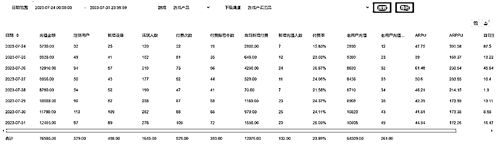
给大家看一个新起的账号后台，给大家看一下，也许会更有借鉴意义~
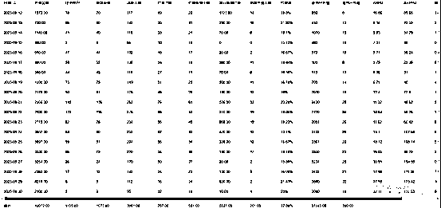
这个账号后台每天导流的量并不多，导流加起来也就1800个左右，哪怕导流断了，用户还在一直充值，只要用户还在玩，就有充值，预计这批用户40W+的充值问题不大。
近期，正处于换游戏产品，持续迭代进阶过程中，尽请期待~
1.赛道与对手的选择大于一切，普通人的机会更多在于别人看不到和看不上的地方，大佬们看不上的赛道，普通人机会反而更大，甚至于能做到降维打击；
2.做小不做大，要猛，更要持久，有时候保下限比冲上限更重要，活着比一切都强；
3.想都是问题，做才有答案，先完成再完美，直接干就完了，想都准备好再去做，黄花菜都凉了。做任何事，提前做好最坏预期，保证承受范围内就去做，失败了就及时止损。
4.小老板一定要懂业务，亲力亲为在一线，因为你大概率招不到能力极强的员工，能力过强也难留住，减少员工的思考，老板多想多做，不要对员工有过多期待；
5.现金为王，落袋为安，不要总追求规模和数据层面的好看，钱到你口袋才是你的；
6.生意的本质是利润，流量需要的是获客，曝光与数据背后的虚假繁荣远没有结果重要，账号是工具，不是资产，号没了再起，流量不行就换，不要总纠结账号废了怎么办；
7年互联网历程，曾梦想着成为一名艺术家（设计本科），不曾想终究背离了曾经的理想，我也时常自洽，红军尚有长征万里时的无奈，韩信尚能默默承受胯下之辱，我们如今所面对的困难与挫折相比之下更是不值一提。
一路走来，我并没有太多所谓的规划，没有那么多所谓的高瞻远瞩，也不会去为还未发生的事去过度担忧，我认为活在当下，做好眼前更重要！要克制、要沉淀，只为活成自己！
23年，人生中第一次来到北方，是业务层面的新增量，更是书写着人生经历的新篇章，希望给团队兄弟们和自己的内心交上一份满意的答卷。
24年，新团队能够进一步做大做强，早日实现单月流水1000W+，能够安心的将团队交给兄弟们，自己也能够不留遗憾的早日回到杭州，希望能在人生的旅途中，也能够遇到更多能一路同行的兄弟们，碰撞出更多火花~
一起顶峰相见：人生不设限，边做边知道！